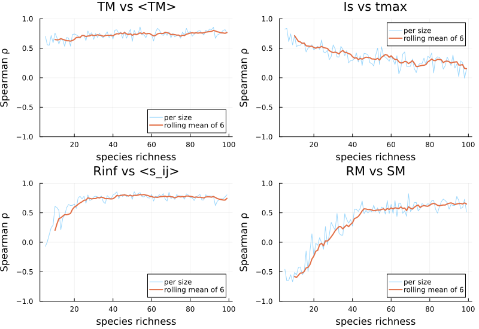
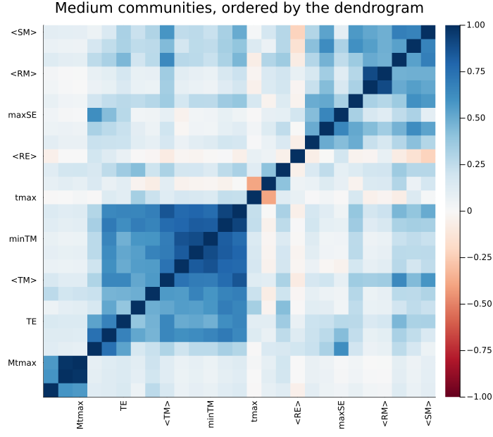

Simon Frost
Domínguez-García, Dakos and Kéfi (2019, PNAS 116:25714) computed 27 stability metrics for thousands of simulated food webs and asked how they are related. Their answer was three groups of correlated metrics, which they called early response to pulse, sensitivities to press and distance to threshold. This vignette repeats their statistical analysis on their own data (Dataset S2, 100 communities for each richness from 5 to 99 species). Each step is also checked against the output of their Python code. The next vignettes regenerate the data themselves.
using DominguezGarcia2019
using DataFrames, Statistics, Random, Printf
using LinearAlgebra: I
using Plots
data = joinpath(pkgdir(DominguezGarcia2019), "data", "dominguez-garcia2019")
df = read_metrics(joinpath(data, "Dataset_S2.csv"))
size(df)
(9380, 29)
read_metrics reads the raw columns of the authors’ GitHub deposit. It then applies the transformations of their prepare_dataframe, so that a larger value of each metric means a more stable community. The result equals the publisher’s version of Dataset S2 to within 4e-13.
For each richness, size_correlations computes the 27 × 27 Spearman correlation matrix (and two covariance matrices used later).
sc = size_correlations(df)
li = Dict(l => i for (i, l) in enumerate(sc.labels))
ρ(a, b) = sc.rho[li[a], li[b], :]
trailing(x, k = 6) = [i < k ? NaN : mean(x[(i - k + 1):i]) for i in eachindex(x)]
pairs = [("TM", "<TM>"), ("Is", "tmax"), ("Rinf", "<s_ij>"), ("RM", "SM")]
plot([plot(sc.sizes, ρ(a, b); label = "per size", alpha = 0.4, title = "$a vs $b", ylim = (-1, 1)) for (a, b) in pairs]...;
layout = (2, 2), size = (800, 550), xlabel = "species richness", ylabel = "Spearman ρ")
for (k, (a, b)) in enumerate(pairs)
plot!(sc.sizes, trailing(ρ(a, b)); subplot = k, label = "rolling mean of 6", lw = 2)
end
current()

These are the four pairs of the paper’s Figure 1. Like the authors’ code, the smoothed curve is a trailing mean of six sizes, although SI §1 says it is centred.
SI §1 classifies each of the 351 pairs by how its correlation differs between small (5–15), medium and large (85–95) communities. The authors’ code uses some windows that differ slightly from the text (5–14 for one test, and 50–59 for “medium”).
types = correlation_types(sc)
combine(groupby(types, :type), nrow => :pairs)
<div><div style = "float: left;">7×2 DataFrame</div><div style = "clear: both;"></div></div><div class = "data-frame" style = "overflow-x: scroll;">
| Row | type | pairs |
|---|
| String | Int64 |
| 1 | F | 105 |
| 2 | C | 7 |
| 3 | E | 64 |
| 4 | G | 155 |
| 5 | D | 5 |
| 6 | B | 8 |
| 7 | A | 7 |
These are the counts the authors’ code produces: 155 pairs (44%) are unchanged (G), and most of the others weaken (F, 105) or strengthen (E,
- between small and medium communities, then stay constant.
For each size class, the correlations are averaged over the sizes in the class. A network is then built with the metrics as nodes and the absolute mean correlations as edge weights. Modularity measures how well a partition separates strongly connected groups.
groups_of(g) = [sc.labels[g .== k] for k in 1:maximum(g)]
results = map(SIZE_CLASSES) do (name, (lo, hi))
R, _ = class_average(sc, lo, hi)
W = metric_network(R)
g, Q = modular_groups(W; runs = 50, rng = Xoshiro(1))
name => (R = R, W = W, groups = g, Q = Q)
end |> Dict
for name in ("small", "medium", "large")
r = results[name]
@printf("%-6s Q = %.4f\n", name, r.Q)
foreach(m -> println(" ", join(m, " ")), groups_of(r.groups))
end
small Q = 0.1474
R0 Is Amax tmax Rinf MRinf S <s_ij> TM <TM> minTM <CE> TE maxCE
MR0 MAmax Mtmax
RM <RM> maxRM SM <SM> maxSM <RE> maxRE <SE> maxSE
medium Q = 0.1767
R0 Amax RM <RM> maxRM SM <SM> maxSM <RE> maxRE <SE> maxSE
Is tmax Rinf MRinf S <s_ij> TM <TM> minTM <CE> TE maxCE
MR0 MAmax Mtmax
large Q = 0.2074
R0 Amax tmax MR0 MAmax Mtmax
Is Rinf MRinf S <s_ij> TM <TM> minTM <CE> TE maxCE
RM <RM> maxRM SM <SM> maxSM <RE> maxRE <SE> maxSE
The paper reports a best partition with modularity Q = 0.177 from ten Gephi runs. The Louvain method here finds Q = 0.1767 on the medium class, so the paper’s figure most likely refers to that class. The partition shipped with the authors’ code, which is the same file for all three classes, scores a little lower:
shipped = Dict("MAmax" => 0, "Mtmax" => 0, "MR0" => 0, "Amax" => 1, "R0" => 1, "tmax" => 1,
"RM" => 3, "<RM>" => 3, "<SE>" => 3, "maxSE" => 3, "SM" => 3, "<SM>" => 3, "maxRE" => 3,
"maxSM" => 3, "maxRM" => 3, "<RE>" => 3)
gship = [get(shipped, l, 2) for l in sc.labels]
[@sprintf("%s: Q(shipped) = %.4f, Q(Louvain) = %.4f", n, modularity(results[n].W, gship), results[n].Q)
for n in ("small", "medium", "large")]
3-element Vector{String}:
"small: Q(shipped) = 0.1303, Q(Louvain) = 0.1474"
"medium: Q(shipped) = 0.1751, Q(Louvain) = 0.1767"
"large: Q(shipped) = 0.2040, Q(Louvain) = 0.2074"
The three groups of the paper are clear in every class: the median pulse metrics (MR0, MAmax, Mtmax); the resistance and sensitivity of biomass to presses and extinctions; and resilience, invariability, sensitivity and tolerance. The metrics the paper calls idiosyncratic (R0, Amax, tmax) move between groups as the communities grow.
The paper describes average-linkage clustering on the distance d = 1 − ρ. The authors’ code instead clusters the rows of \|ρ\| as profiles, using correlation distance. metric_dendrogram does either.
R = results["medium"].R
dd = metric_dendrogram(R)
order = dd.tree.order
heatmap(sc.labels[order], sc.labels[order], R[order, order]; c = :RdBu, clim = (-1, 1),
xrotation = 90, size = (700, 620), title = "Medium communities, ordered by the dendrogram")

for (name, (lo, hi)) in SIZE_CLASSES
R, _ = class_average(sc, lo, hi)
a, b = metric_dendrogram(R), metric_dendrogram(R; distance = :one_minus_rho)
@printf("%-6s as coded: %.3f (vs its own distance %.3f); with d = 1 − ρ: %.3f\n", name, a.c_code, a.c_clustering,
b.c_clustering)
end
small as coded: 0.872 (vs its own distance 0.889); with d = 1 − ρ: 0.859
large as coded: 0.869 (vs its own distance 0.945); with d = 1 − ρ: 0.911
medium as coded: 0.846 (vs its own distance 0.912); with d = 1 − ρ: 0.872
The coefficient the authors print (as coded) compares the tree with a Euclidean distance it was not built from. Its medium-class value, 0.846, is the c = 0.85 of the paper.
For each metric, explained_variance gives the share of the total variance of the (mean/range-normalised) metrics that it accounts for through its covariances (SI §6).
Σ, _ = class_average(sc, 45, 55; field = :valuecov)
ev, own = explained_variance(Σ)
sort(DataFrame(metric = sc.labels, explained = ev, own = own), :explained; rev = true)[1:8, :]
<div><div style = "float: left;">8×3 DataFrame</div><div style = "clear: both;"></div></div><div class = "data-frame" style = "overflow-x: scroll;">
| Row | metric | explained | own |
|---|
| String | Float64 | Float64 |
| 1 | \<TM\> | 0.2437 | 0.040346 |
| 2 | \<s_ij\> | 0.237236 | 0.0319732 |
| 3 | Rinf | 0.227862 | 0.0426443 |
| 4 | minTM | 0.219538 | 0.0418593 |
| 5 | TM | 0.211224 | 0.0507891 |
| 6 | S | 0.207844 | 0.0337527 |
| 7 | \<CE\> | 0.207 | 0.0390786 |
| 8 | TE | 0.185343 | 0.0383414 |
These values equal the Python output to 1e-16. The paper’s comparison of three metrics taken from one group with three taken from different groups uses the volume of the rank-covariance ellipsoid (SI §7). The volume is scaled so that independent metrics of equal variance give 1.
With three large groups in the medium class, three metrics from different groups span more of the space than three from one group. This is the paper’s argument for measuring one metric from each group.